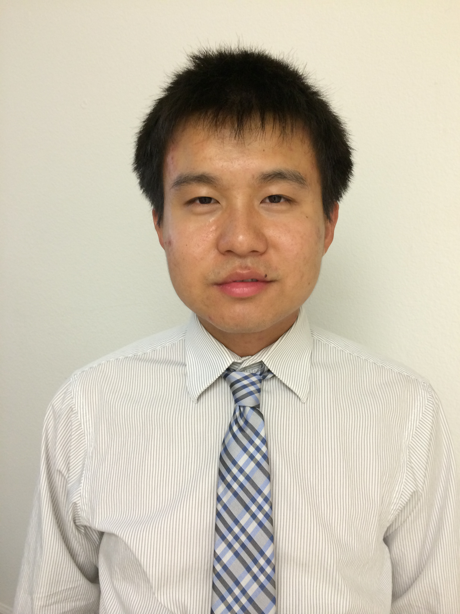

Yuan Zhang
Senior Data Scientist
Samsung Research America
Email: nick.zhangyuan@gmail.com
Phone: (408)544-5714
Address: 75 W Plumeria Dr, San Jose, CA, 95134
Links:
LinkedIn,
Google Scholar
Biography
Yuan Zhang is a senior data scientist at Samsung Research America. He is currently leading several big data analytics and machine learning projects, including TV program popularity analysis and TV program/Ads recommendation system. Yuan
received his PhD degree in computer science from Michigan State University. Yuan has broad research interest in
bioinformatics, data mining, and machine learning. He has published
research papers in top journals and conferences, including PLOS Computational Biology, Bioinformatics,
BMC Bioinformatics, PSB, ACM BCB, etc. He is the author of several open source bioinformatics software, including HMM-FRAME, SAT-Assembler, SALT, MetaDomain, and PseudoDomain.